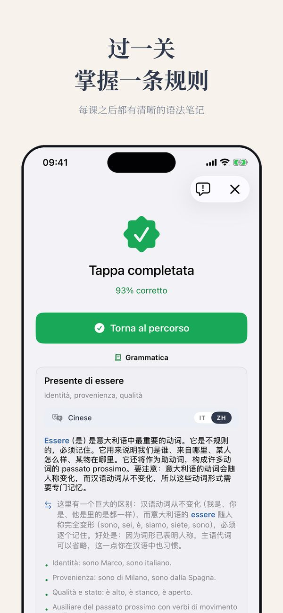

免费水平测试 · Thuis Italiaans
我的意大利语是什么水平？
“中级”可以指五种不同的东西。想在 A1-C2 标准上得到一个真正的答案，方法在这里：两分钟自测，再加一个免费测试，四项技能分开测。
免费，大约15分钟，结果马上出
开始水平测试A1 到 C2 到底是什么意思
问五个人“意大利语中级”是什么意思，你会得到五个答案。所以欧洲定了一个统一标准，叫 CEFR，从 A1 到 C2 共六个级别。大学、雇主、入籍考试用的都是它。每个级别一句话：
- A1：能点杯咖啡，能介绍自己。
- A2：能应付所有可预料的情况：买菜、预约、聊聊今天做了什么。
- B1：能真正聊天，就算话题跑偏也跟得上。
- B2：能用意大利语工作，看电视不痛苦。
- C1：能听出语体和惯用语，能读文学。
- C2：接近母语，听得懂笑话。
所以真正的问题不是“我算不算中级”，而是“在这个标准上，我的每项技能各在哪里”。
两分钟自测
做测试之前，先诚实地过一遍这个清单。找到最后一条对你成立的：
- 我能在餐厅点菜，而且听得懂服务员的回答：你至少在 A2 区间。
- 我能讲十分钟自己的工作，别人能听懂：大约 B1。
- 我看电影不用字幕，大部分场景能跟上：大约 B2。
- 我能论证一个观点，而且能感觉到正式和非正式意大利语的差别：大约 C1。
有用，但很粗糙，而且有一个已知的偏差：我们总拿自己最强的那项技能来评价自己。这就引出了真正的问题。
四项技能不在同一个水平
几乎没有人“就是 B1”。你可能阅读 B1，听力 A2，口语 A2，写作 B1，或者别的组合。阅读通常领先一个级别，因为速度由你控制。听力和口语落后，因为真正的意大利人不会为你放慢语速。一个笼统的标签恰恰藏住了你最需要的信息：该练哪项技能。
所以我的免费水平测试把四项技能分开测。大约十五分钟，结果马上出：不是一个字母，而是一份档案。两个同样“B1”的学生，可以带着完全不同的学习计划离开。
常见问题
在线水平测试准不准？
好的测试能把你定位在半个级别的误差之内，这已经够选材料和定起点了。比单一标签更重要的是分项结果：它告诉你该练什么，而不只是你在哪里。
我阅读是 B1，口语是 A2，那我到底什么水平？
两个都是，这很正常。阅读通常领先，因为节奏由你控制。阅读用 B1 的材料，练习时间都投到口语上，直到两边拉平。
多久重测一次合适？
最多三个月一次。间隔更短的话，变化比测试的误差还小，频繁重测只会带来挫败感。


Ti · iOS app
Ti 实际体验
CEFR 学习路径、练习、书报亭和分级意大利经典 — 从 A1 到 C2，支持 14 种语言。



更多来自 Thuis Italiaans